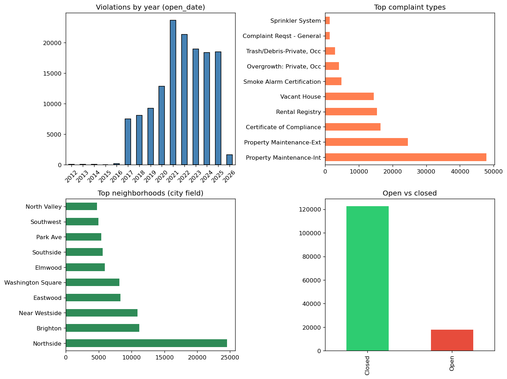

← Back to Track B (main maps hub)
Exploratory analysis and regression linking code enforcement violations to property assessment at parcel (SBL) level.
Regenerate figure from repo root: python -m src.data.export_preview_figures (writes reports/figures/ and copies to docs/images/).

Full notebook in the repo: notebooks/Code_Violations_Assessment_Merge.ipynb · View on GitHub